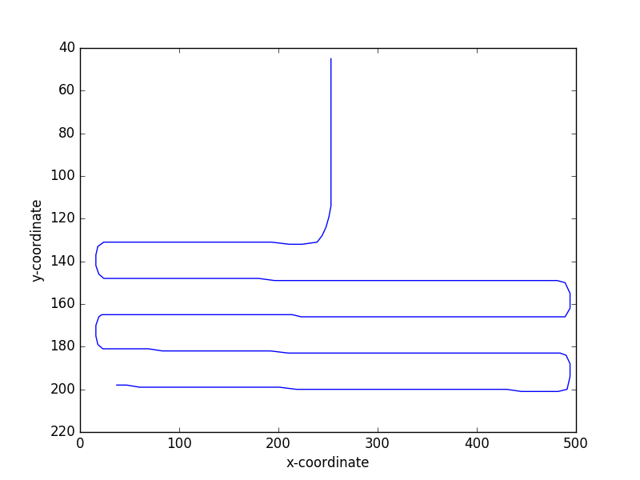

Microfluidic analysis
Table of Contents
1 The distance file
These points were hand measured along the channel of the microreactor. We read them in, and compute the distance along the lines. The first point corresponds to the y-junction, and represents d = 0.
import numpy as np
import matplotlib.pyplot as plt
import pycse.orgmode as org
data = np.loadtxt('05MEA-5-2-16-distance.txt')
x, y = data.T
# These distances are in pixels. We need a conversion to get it in microns.
distances = [np.sqrt((x[i - 1] - x[i]) ** 2 + (y[i - 1] - y[i]) ** 2)
for i in range(1, len(x))]
cumulative_distance = np.cumsum(distances)
print(len(x))
182
Now, we plot the data.
plt.figure()
plt.plot(x, y)
plt.xlabel('x-coordinate')
plt.ylabel('y-coordinate')
plt.gca().invert_yaxis()
org.figure(plt.savefig('distance.png'), caption='The points used to compute the distances.')
plt.figure()
plt.plot([i for i in range(1, len(x))], cumulative_distance)
plt.xlabel('Point index')
plt.ylabel('Distance to point along the channel.')
org.figure(plt.savefig('cumulative_distance.png'))


2 Frame data
This is data that comes from image analysis. There are 4 columns:
- The index of the bubble
- The area of the bubble in pixels
- The x-coordinate of the center of mass of the bubble.
- The y-coordinate of the center of mass of the bubble.
We plot the COMs and the channel distance data here.
import numpy as np
import matplotlib.pyplot as plt
import pycse.orgmode as org
data = np.loadtxt('frame-14.txt', skiprows=1)
indices, areas, x_com, y_com = data.T
plt.figure()
plt.scatter(x_com, y_com, s=areas)
plt.gca().invert_yaxis()
plt.xlabel('x-coordinate')
plt.ylabel('y-coordinate')
plt.plot(x, y, 'b.')
plt.xlim([0, 500])
org.figure(plt.savefig('bubble-x-y.png'), caption='Location of the bubble centers of mass.')
microns2pixels = 2000/85.259
hydraulic_diameter = 121.0 # microns
AREA = 15270 # What is this
# the areas in um^2
areas_um2 = areas * (microns2pixels ** 2)
length_noends = (areas_um2 - np.pi * hydraulic_diameter ** 2 / 4) / hydraulic_diameter
# um^3
volumes = length_noends * AREA + np.pi * hydraulic_diameter ** 3 / 6

Figure 1: Location of the bubble centers of mass.
3 Calculating the distance to each bubble COM
The principle idea is to consider the data that defines the distance along the channel as a list of segments. We want to find the segment that a particular COM is closest to, and where the intersection is between the points. Then, we just sum the distances up to the point closest to the y-junction, and then add the distance to the COM.
We have points in two lists: x, y for the distances along the channel. We need to create a new list of segments. This list will have one less element in it than the list of points.
# List of segments, a list of (P1, P2) pairs that define a segment segments = [[(x[i - 1], y[i - 1]), (x[i], y[i])] for i in range(1, len(x))] print(len(segments)) print(len(x))
181 182
The distance from a point to https://en.wikipedia.org/wiki/Distance_from_a_point_to_a_line#Line_defined_by_two_points
First, we define a function that returns the distance from a point P0 to a segment defined by two points P1 and P2. The points P1 and P2 will be from the channel distance set.
def distance_to_segment(P1, P2, P0):
"""Return distance of P0 to the segement defined by P1 and P2.
https://en.wikipedia.org/wiki/Distance_from_a_point_to_a_line#Line_defined_by_two_points
"""
x1, y1 = P1
x2, y2 = P2
x0, y0 = P0
# vertical case
if x1 == x2:
#print('vertical segment')
a = 1.0
b = 0.0
c = -x0
d = np.abs(a * x0 + c) / np.abs(a)
x = x1
y = y0
# horizontal case
elif y1 == y2:
#print('horizontal segment')
a = 0.0
b = -1.0
c = y1
d = np.abs(b * y0 + c) / np.abs(b)
x = x0
y = y1
# The general case
else:
a = (y2 - y1) / (x2 - x1)
b = -1.0
c = y2 - a * x2
d = np.abs(a * x0 + b * y0 + c) / np.sqrt(a ** 2 + b ** 2)
# point of intersection
x = (b * (b * x0 - a * y0) - a * c) / np.sqrt(a ** 2 + b ** 2)
y = (a * (-b * x0 + a * y0) - b * c) / np.sqrt(a ** 2 + b ** 2)
# determine if (x, y) is between P1 and P2
segment_length = np.sqrt((x1 - x2) ** 2 + (y1 - y2) ** 2)
# distance of intersection to segment points
d1 = np.sqrt((x1 - x) ** 2 + (y1 - y) ** 2)
d2 = np.sqrt((x2 - x) ** 2 + (y2 - y) ** 2)
# if d1 + d2 == segment length, the intersection is between the segments.
# We use a tolerance for the comparison.
if np.abs(d1 + d2 - segment_length) < 1e-3:
return d
else:
# return a large number since the intersection is not between the points.
return 1e10
Now we get the index to the shortest distance from each point to the segments.
inds = [np.argmin([distance_to_segment(seg[0], seg[1],
com) for seg in segments])
for com in zip(xs, ys)]
channel_dists = ([np.sum(distances[0:x]) for x in inds])
print(len(channel_dists))
32
Finally, we can plot the areas vs the distance.
plt.figure()
plt.plot(channel_dists, areas, 'bo')
plt.xlabel('Distance (pixels)')
plt.ylabel('Area (pixel$^2$)')
org.figure(plt.savefig('area_vs_dist.png'))